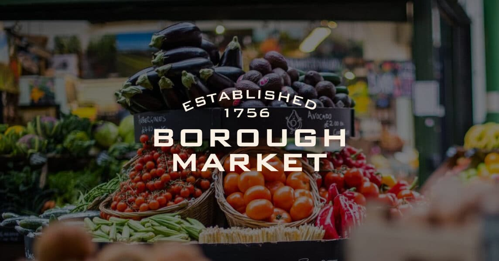

Weekend Brief · June 2026
London: West African Michelin Stars + City Playbook
3 days · 4 Michelin-recognised restaurants · 2 free days to fill
Saturday dinner — the only viable starred choice
Akoko
★ Michelin
·
21 Berners St, Fitzrovia W1T · 19:00 · £130 pp
·
⚠ Declare allergens at booking (no tomatoes / alliums / ginger / coconut milk)


Weekend Schedule
Friday
Arrival
15:00 – 17:00
Land · check in · drop bags
Central (Soho / Fitzrovia) puts Akoko at 10 min walk Saturday.
17:00 – 19:30
South Bank walk — Westminster Bridge → Tower Bridge
4 km flat. Eye, National Theatre, Tate Modern, Millennium Bridge, Globe in sequence. Golden-hour light on Westminster skyline from Waterloo Bridge.[14]
19:30 – 21:30
Dinner in Soho
Save appetite; Akoko on Saturday.
22:00 – close
Tate Modern late opening
Open until 22:00 Fri/Sat.[16] Frida Kahlo show opens 11 Jun — book paid ticket in advance if your weekend is post-11th.
Saturday
Anchor Day
09:00 – 11:30
Pre-book timed entry (1 week+ ahead). Free Yeomen Warder tour on arrival — don't skip.[15]
12:00 – 13:30
Borough Market + Akara option
14:00 – 17:00
Galleries or West End browsing
Pick one: V&A (Schiaparelli: Fashion Becomes Art) · National Gallery (Zurbarán, to Aug) · Wallace Collection (always free).
Or: 15:30 at TKTS Leicester Square for same-day West End seats up to 50% off.[12]
17:30 – 18:45
Back to hotel · freshen up
Akoko is smart-casual. Arrive slightly early — kitchen has strict allergen constraints; confirm any dietary needs at the door.
Sunday
Wind-down
08:00 – 10:30
Sunday 8:00–15:00 only. Go before 11am — wall-to-wall cut flowers, one narrow street, gridlocked by noon.[23]
10:30 – 12:30
Brick Lane — bagels, vintage, street art
Sun 10:00–18:00. Beigel Bake for breakfast. Five-minute walk from Columbia Road.[24]
13:00 – 13:30
Thames Clipper to Greenwich
Uber Boat RB1 route. 50-minute river ride, city views included. Hop-on-hop-off day pass is best value.[14]
14:00 – 17:00
Greenwich circuit
Cutty Sark → Greenwich Market (craft Sun) → Royal Observatory → foot tunnel to Island Gardens for the Canaletto-view shot of the Queen's House.[25]
18:00 – 20:00
Sky Garden — sunset cocktail
Pre-book free timed entry at tickets.skygarden.london. Outdoor deck weather-dependent; arrive for golden hour.[13] Fly out Monday morning.
Geographic Clusters
Zone A · W1T / W1W
Fitzrovia
Akoko ⭐ · 21 Berners St
Chishuru ⭐ · 3 Great Titchfield St
Soho 5 min walk
Oxford Circus / Goodge St Tube
Chishuru ⭐ · 3 Great Titchfield St
Soho 5 min walk
Oxford Circus / Goodge St Tube
Victoria · Central · Northern lines
Zone B · SE1
South Bank + Borough
Borough Market · Sat 9–17
Akara Bib Gourmand · Borough Yards
Tate Modern · open late Fri/Sat
Shakespeare's Globe · £5 Rush
Akara Bib Gourmand · Borough Yards
Tate Modern · open late Fri/Sat
Shakespeare's Globe · £5 Rush
London Bridge · Southwark · Waterloo
Zone C · WC2R
Strand / Temple
Ikoyi ⭐⭐ · 180 Strand
Dinner Mon–Fri only
Table drop: 1st of month 12:00 GMT
14-course tasting · £380
Dinner Mon–Fri only
Table drop: 1st of month 12:00 GMT
14-course tasting · £380
Temple / Embankment · District · Circle
Zone D · SE10
Greenwich
Royal Observatory + Cutty Sark
Thames Clipper from Westminster
UNESCO World Heritage site
Sunday only circuit
Thames Clipper from Westminster
UNESCO World Heritage site
Sunday only circuit
Uber Boat RB1 · ~50 min from Westminster
Full Michelin Roster — 4 West African venues
Ikoyi
⭐⭐ Two Michelin Stars · Best Global Restaurant 2026
180 Strand, Temple WC2R 1EA
£380 full · £170 short menu
Dinner Mon–Fri · Lunch Wed–Fri
Closed Weekends
14 courses
West African × British
Booking: 1st of each month at 12:00 GMT — set a calendar alert[2]
Akoko
⭐ One Michelin Star · The Saturday Pick
21 Berners Street, Fitzrovia W1T 3LP
£130 dinner · £65 lunch
Lunch Thu–Sat · Dinner Mon–Sat
Saturday Dinner ✓
10 courses
Nigerian · Ghanaian · Senegalese
⚠ No tomatoes, alliums, ginger, or coconut milk — declare at booking[5]
Chishuru
⭐ One Michelin Star · UK's first Black female chef to win
3 Great Titchfield St, Fitzrovia W1W 8AX
£95 dinner · £45 lunch
Mon–Fri only · 12:00–1:45 & 17:30–21:30
Closed Weekends
Yoruba · Igbo · Hausa
Best-value starred meal
If extending to Friday: the £45 lunch is London's best-value starred meal[3]
June 2026 — Date Conflicts & Opportunities
Booking Checklist
Akoko Saturday dinner — SevenRooms at akoko.co.uk
Declare allergens at booking. £130 pp. Lead time unknown — call if booking within 2 weeks of travel.[1]
Tower of London — timed entry
£34.80 online (£39.80 gate). Saturdays fill fast. Book 1 week+ ahead.[15]
Drop Friday 11:00am online — the week ahead. Set an alarm. First-come, first-served.[11]
Sky Garden — free timed slot
Book via tickets.skygarden.london. Free but timed; popular weekend slots go quickly.[13]
Ikoyi — if extending to Friday
Calendar alert: 1st of the month, 12:00 GMT. Tables 2 months out. £380 (£170 short menu). Email for waitlist.[2]
Permanent collection free. Frida Kahlo show (from 11 Jun) needs paid advance ticket. Fri/Sat open until 22:00.[8]